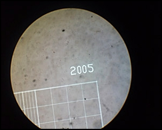

Blood + WBC Diluting Fluid

Details
The white cell count (WBC) is the total number of leukocytes in a volume of blood,
expressed as thousands/µl. As with the RBC, the WBC can be done by manual methods or
by automated cell counters. The WBC by any method is a count of nuclei or total nucleated
cell count. If nucleated red blood cells (nRBC) are circulating in blood, they will be included
in the nucleated cell count whether the count is done by manual methods or by automated analyzers.
In such cases, the WBC represents the leukocyte count only after it has been corrected for the
nucleated red cells (nRBCs). The number of nRBCs per 100 leukocytes is recorded during the differential leukocyte count.
Back